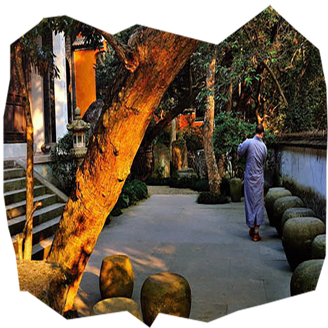
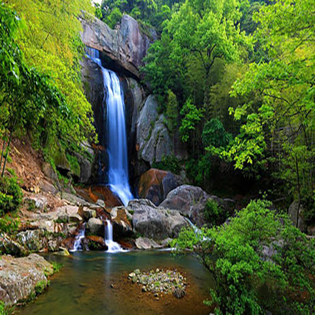
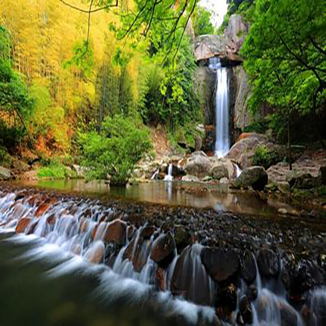

<
>

国清寺
国清寺位于浙江省台州市天台县城关镇，始建于隋开皇十八年（598年），初名天台寺，后取“寺若成，国即清”，改名为国清寺。寺庙占地面积7.3万平方米。
隋代高僧智越在国清寺创立天台宗，为中国佛教宗派天台宗的发源地， 影响远及国内外。鉴真东渡时曾朝拜国清寺。
日本留学僧最澄至天台山取经，从道邃学法，回国后在日本比睿山兴建沿历寺，创立日本天台宗，后尊浙江天台山国清寺为祖庭。
1

华顶峰 华顶峰为天台山主峰，位于县城北25公里，大巴车直达景点。景区面积7.5平方公里，为国家森林公园。主峰海拔1098米，四周群山向而拱之，层层相裹，状如百叶莲花，华顶正当花之顶，故名“华顶”。顶峰最高处叫拜经台，曾是智者大师求拜《楞严经》的地方。天气晴朗之时，可观东海日出。这里群峰叠翠，白云缭绕，晓雾昏烟，云气氤氲盘结，故有“华顶归云”之称。
2

石梁飞瀑石梁飞瀑位于浙江省天台县城北22公里的天台山中，是浙东“唐诗之路”的精华所在，在崇山翠谷之中，一石横跨天际，瀑布喷涌而下，“昼夜起风雷”，令历代文人骚客为之倾倒，留下无数壮美诗篇，被誉为“天下第一奇观”。近瀑布的古方广寺为五百罗汉道场。中方广寺是禅宗道场。
3

赤城山 一在浙江天台西北，为天台山南门。因山上赤石屏列如城，望之如霞，故名。山有石洞十二以紫云洞和玉京洞最著。山顶有赤城塔，为南朝梁岳阳王妃所建。今“赤城栖霞起而建标。”唐李白《梦游天姥吟留别》诗：“天姥连天向天横，势拔五岳掩赤城。”
4